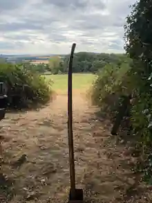
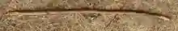
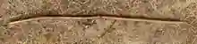

Ready to go
Cleaned, smoothed, photographed, named and given a permanent web address. Waiting for its first proper walk.
Walking stick no. 001
A walking stick that keeps walking.

It isn’t for sale and nobody wants your personal details.
It’s simply travelling from place to place. If you find it, use it if you like. When you’re finished, leave it somewhere sensible for somebody else to find.
No account. No mailing list. Just a stick trying to get somewhere.
I found the stickThe map will grow one pin at a time. Locations are deliberately approximate: the journey matters more than anybody’s precise whereabouts.
No journey pins yet. Good. It hasn’t cheated.
Cleaned, smoothed, photographed, named and given a permanent web address. Waiting for its first proper walk.
This tiny form will accept a location, an optional comment and an optional photograph once the reporting endpoint is connected.
Tell us where the stick has got to. Approximate locations are fine.
For identification purposes. Also because even travelling sticks are entitled to a lie down.

